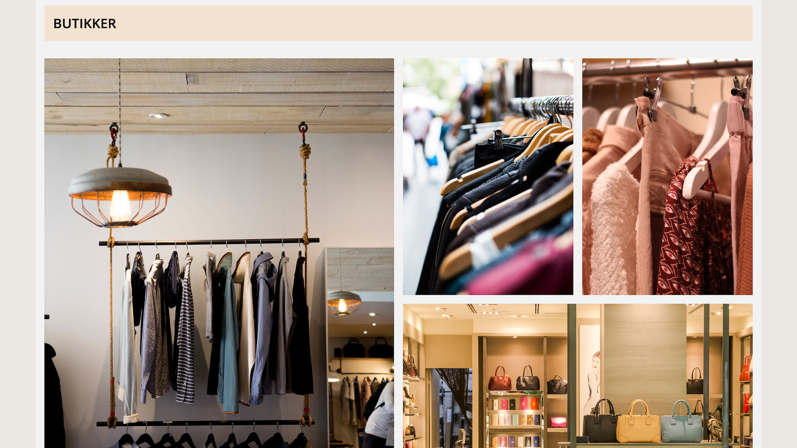
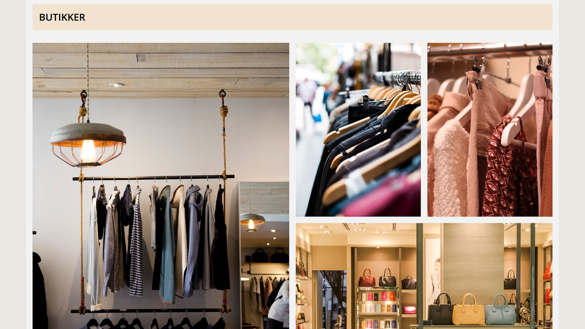
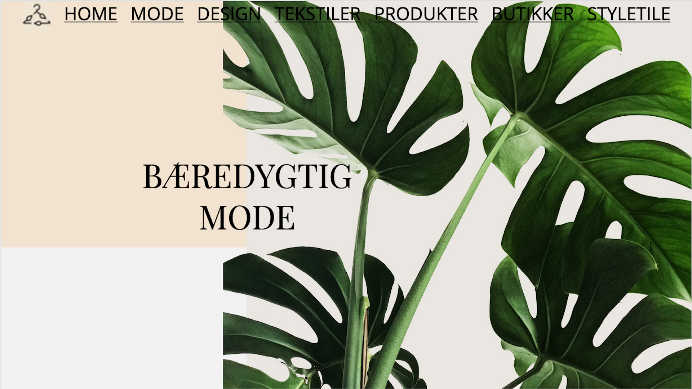
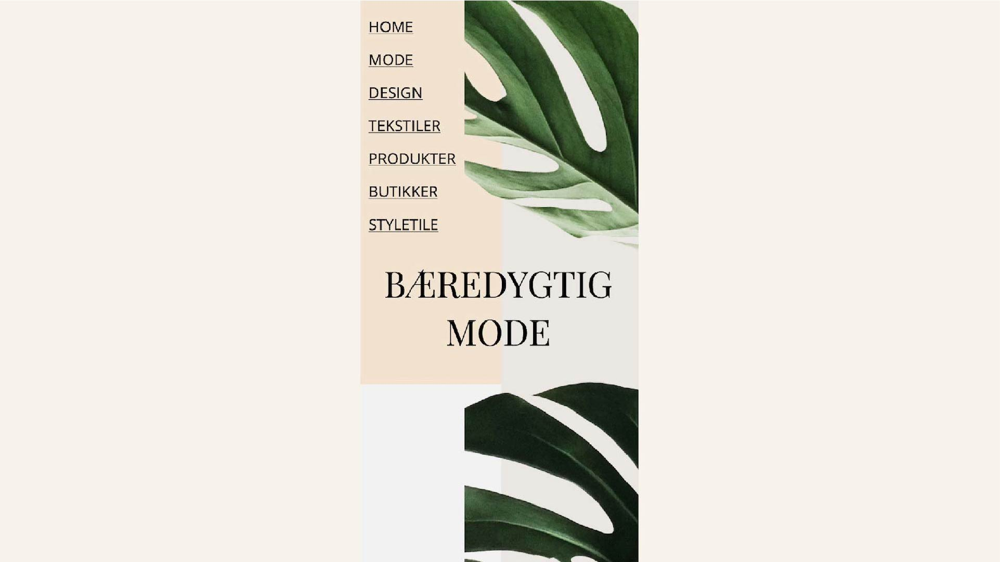

responsive site
02.04.02 responsive site
I denne opgave udarbejdede jeg mit eget responsive website. Jeg arbejde med moodboard gennem udviklingen af mit splashbillede samt favicon for visuelt at kunne beskrive, hvilken stil og tone disse elementer skulle have. I sammenspil med min uddelte stilart - “minimalism in modern webdesign” - havde jeg i mit moodboard fokus på en smal og jordlig farvepallette, med simpel og æstetisk grafik.
 

Rent CSS mæssigt lærte jeg, at arbejde med bla. grid og flexbox, hvilket er de to layoutprincipper indenfor CSS. I min dekstop menu har jeg eksempelvis brugt display: flex, da flexbox stiller tingene op på én række ved siden af hinanden. I eksempelvis sjette sektion har jeg derimod brugt grid til mine billeder, så de kunne opdeles i både rækker og kolonner.
Endvidere lærte jeg gennem CSS at gøre hjemmesiden responsiv, ved at indsætte 3 forskellige mediaquery’s, som gør at sitets layout ændre sig, ud fra om man ser det på en computerskærm, tablet eller mobil.

